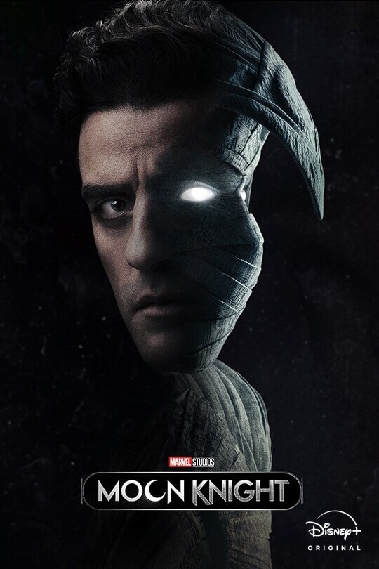

Holdlovag a Marvel egyik szuperhőse, aki 2022-ben került a reflektorfénybe, amikor megjelent saját tévés sorozata.
Azonban Moon Knight karaktere sokkal régebbre nyúlik vissza.
Holdlovag polgári nevén Mark Spectornak hívják aki egy zsoldos
De Mark Spectornak több alteregója is van
Spector éppen Szudánban dolgozik, amikor egy másik zsoldos megöl egy régészt a férfi lánya és egyben kollégája,
Marlene Alraune előtt.
Marc halálos sérüléseket szenved a harcban, és meg is hal, azonban teljesen egészségesen újjá éled.
Spector azt állítja, hogy Khonshu, az egyiptomi holdisten azt akarja, hogy ő legyen a Holdlovag,
Khonshu balkeze, aki megvédi és megbosszulja az ártatlanokat, így jóvá téve az erőszakot,
amit előző életében elkövetett.
Holdlovag először 1975-ben jelent meg, a Werewolf by Night (Éjszakai vérfarkas) című képregényben.
Holdlovagot holddal kapcsolatos fegyverekkel és ruhával egészítették ki, valamint ezüst fegyvereket kapott.
2022-ben a Disney + streaming szolgáltató piacra dobta az egyik legújabb Marvel sorozatott,
amit Moon Knightnak neveztek.
A főszerepet Oscar Isac játsza, aki lenyűgöző alakításával már az első pár percben szinpatikussá válik a nézőnek.
Oscar Isacnek ez egy kifejezetten komoly feladat volt mivel egyszerre kellett több személyiséget eljátszania,
ami szerencsére nagyon jól sikerült.
A sorozat kisebb-nagyobb helyszíneit Budapesten forgatták.
A legfeltünőbb változás az Mark alteregóin tűnik fel.
A sorozat az elején Steven Grantet mutatja be és csak későbbb jön elő Marc Spector is.
Steven Grantből lesz a sorozat folyamán Mr Knight ami a képregényekben nem így volt.
Jake Lockley csak a sorozat utolsó két percében tűnik fel egy "stáblista utáni" jelenetben.
Előzetes a Holdlovagrról: